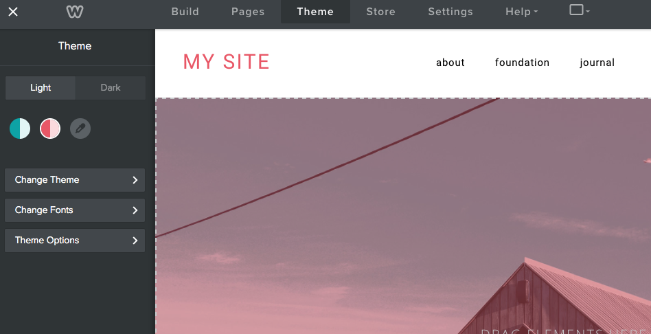
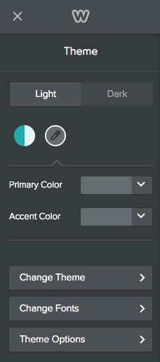

<!DOCTYPE html>
<head>
    <meta charset="utf-8">
<meta http-equiv="X-UA-Compatible" content="IE=edge">
<meta name="viewport" content="width=device-width, initial-scale=1">
<meta name="description" content="You can create a color palette for your theme that allows the user to select a primary and an accent color for the site.">
<meta name="keywords" content="themes,  color palette, eyedropper, accent color, primary color, variables, LESS variables, LESS, manifest,">
<title>Create a Color Palette | Weebly Cloud for Designers Documentation</title>

<link rel="shortcut icon" href="images/favicon.ico">

<!-- Third-Party CSS -->
<link rel="stylesheet" href="css/syntax.css">
<link rel="stylesheet" type="text/css" href="https://maxcdn.bootstrapcdn.com/font-awesome/4.5.0/css/font-awesome.min.css">

<!-- Custom CSS -->
<link rel="stylesheet" media="screen" href="css/orbit-external.css">
<link rel="stylesheet" media="screen" href="css/orbit.css">
<link rel="stylesheet" media="screen" href="css/theme-weebly.css">

<!-- Third-Party JS -->
<script src="https://cdnjs.cloudflare.com/ajax/libs/jquery/2.1.4/jquery.min.js"></script>
<script src="https://maxcdn.bootstrapcdn.com/bootstrap/3.3.4/js/bootstrap.min.js"></script>
<script src="https://cdnjs.cloudflare.com/ajax/libs/anchor-js/2.0.0/anchor.min.js"></script>
<script src="js/jquery.navgoco.min.js"></script>
<script src="js/jekyll-search.js" type="text/javascript"></script>
<script src="js/toc.js"></script>

<!-- Custom JS -->
<script src="js/customscripts.js"></script>


</head>
<body>

<!-- Navigation -->

<div class="top-nav">
	<div class="top-nav-item">
		<a href="home.html">
		
		
	<br style="text-align: right"/>&nbsp;&nbsp;&nbsp;&nbsp;&nbsp;&nbsp;&nbsp;&nbsp;&nbsp;&nbsp;For Designers
		
		</a>
	</div>

	<div class="top-nav-item">
		
	</div>

	<nav class="top-nav-item">
		<div class="nav-group">
			<ul class="NavList nav-group-list horizontal">
				<!-- entries without drop-downs appear here -->
				
				
				
				<li class="NavLinkLi">
					<a href="home.html" class="NavLink nav-group-list-link">Get Started</a>
				</li>
				
				
				
				<li class="NavLinkLi">
					<a href="ds_apps_gs.html" class="NavLink nav-group-list-link">Apps</a>
				</li>
				
				
				
				<li class="NavLinkLi">
					<a href="ds_themes_start.html" class="NavLink nav-group-list-link">Themes</a>
				</li>
				
				
				
				<li class="NavLinkLi">
					<a href="ds_api_about.html" class="NavLink nav-group-list-link">APIs</a>
				</li>
				
				
				
				<li class="NavLinkLi">
					<a href="ds_tags_about.html" class="NavLink nav-group-list-link">Tags</a>
				</li>
				
				
				
				<li class="NavLinkLi">
					<a href="ds_mg_about.html" class="NavLink nav-group-list-link">Migrated Designer?</a>
				</li>
				
				
				
				<!-- entries with drop-downs appear here -->
				<!-- conditional logic to control which topnav appears for the audience defined in the configuration file.-->
				
				<!--
			<li class="NavLinkLi">


  <a class="email NavLink nav-group-list-link" title="Submit feedback" href="#" onclick="javascript:window.location='mailto:rwhitmore@weebly.com?subject=Weebly Cloud for Designers Docs feedback&body=I have some feedback about the Create a Color Palette page: ' + window.location.href;">Feedback</a>

</li>

-->
        <li class="NavLinkLi">

  <a href="https://weeblycloud.com/admin" target="_blank">Cloud Admin</a>
</li>


		

                <li>
                    <!--start search-->
                    <div id="search-demo-container">
                        <input type="text" id="search-input" placeholder="Search...">
                        <ul id="results-container"></ul>
                    </div>
                    <!--end search-->
                </li>
            </ul>
        </div>
	</nav>
</div>


<div class="page has-sidebar">
    
      <div class="col-sidebar">
       	


<ul id="mysidebar" class="nav NavList">
    
	    
		    
	    
		    

			    <li class="NavLinkLi">
			        <a href="#" class="NavLink isSecondary">Get Started with Customizing Themes</a>
			        <ul class="NavList Children">
			            
			            

				            
					            <li class="NavLinkLi">
					            	<a href="ds_themes_start.html" class="NavLink isSecondary">Customizing Themes</a>
					            </li>
				            

				            
			            
			            
			            

				            
					            <li class="NavLinkLi">
					            	<a href="ds_themes_sample.html" class="NavLink isSecondary">Download Sample Themes</a>
					            </li>
				            

				            
			            
			            
			            

				            
					            <li class="NavLinkLi">
					            	<a href="ds_themes_anatomy.html" class="NavLink isSecondary">Anatomy of a Theme</a>
					            </li>
				            

				            
			            
			            
			            

				            
					            <li class="NavLinkLi">
					            	<a href="ds_themes_directory.html" class="NavLink isSecondary">Theme Directory Structure</a>
					            </li>
				            

				            
			            
			            
			            

				            
					            <li class="NavLinkLi">
					            	<a href="ds_themes_issues.html" class="NavLink isSecondary">Known Issues</a>
					            </li>
				            

				            
			            
			            
			        </ul>
			    </li>
		    
	    
		    

			    <li class="NavLinkLi">
			        <a href="#" class="NavLink isSecondary">Tutorial&#58; Customize a Theme</a>
			        <ul class="NavList Children">
			            
			            

				            
					            <li class="NavLinkLi">
					            	<a href="ds_themes_tutorial.html" class="NavLink isSecondary">Customize a Weebly Theme</a>
					            </li>
				            

				            
			            
			            
			            

				            
					            <li class="NavLinkLi">
					            	<a href="ds_themes_1.html" class="NavLink isSecondary">1. Download the Base Theme</a>
					            </li>
				            

				            
			            
			            
			            

				            
					            <li class="NavLinkLi">
					            	<a href="ds_themes_2.html" class="NavLink isSecondary">2. Apply YOur Theme to a Test Site</a>
					            </li>
				            

				            
			            
			            
			            

				            
					            <li class="NavLinkLi">
					            	<a href="ds_themes_3.html" class="NavLink isSecondary">3. Add a Color Palette</a>
					            </li>
				            

				            
			            
			            
			            

				            
					            <li class="NavLinkLi">
					            	<a href="ds_themes_4.html" class="NavLink isSecondary">4. Create Variations of the Theme</a>
					            </li>
				            

				            
			            
			            
			            

				            
					            <li class="NavLinkLi">
					            	<a href="ds_themes_5.html" class="NavLink isSecondary">5. Edit the Header Template</a>
					            </li>
				            

				            
			            
			            
			            

				            
					            <li class="NavLinkLi">
					            	<a href="ds_themes_6.html" class="NavLink isSecondary">6. Edit the main.less File</a>
					            </li>
				            

				            
			            
			            
			            

				            
					            <li class="NavLinkLi">
					            	<a href="ds_themes_7.html" class="NavLink isSecondary">7. Edit the Blog Post Partial</a>
					            </li>
				            

				            
			            
			            
			            

				            
					            <li class="NavLinkLi">
					            	<a href="ds_themes_8.html" class="NavLink isSecondary">8. Add a Theme Option</a>
					            </li>
				            

				            
			            
			            
			            

				            
					            <li class="NavLinkLi">
					            	<a href="ds_themes_9.html" class="NavLink isSecondary">9. Add a Screenshot</a>
					            </li>
				            

				            
			            
			            
			            

				            
					            <li class="NavLinkLi">
					            	<a href="ds_themes_10.html" class="NavLink isSecondary">10. Deliver Your Theme</a>
					            </li>
				            

				            
			            
			            
			            

				            
					            <li class="NavLinkLi">
					            	<a href="ds_themes_finish.html" class="NavLink isSecondary">Finish</a>
					            </li>
				            

				            
			            
			            
			        </ul>
			    </li>
		    
	    
		    

			    <li class="NavLinkLi">
			        <a href="#" class="NavLink isSecondary">Theme Design</a>
			        <ul class="NavList Children">
			            
			            

				            
					            <li class="NavLinkLi">
					            	<a href="ds_themes_guidelines.html" class="NavLink isSecondary">Theme Design Guidelines</a>
					            </li>
				            

				            
			            
			            
			            

				            
					            <li class="NavLinkLi">
					            	<a href="ds_themes_page.html" class="NavLink isSecondary">Page Guidelines for Themes</a>
					            </li>
				            

				            
			            
			            
			            

				            
					            <li class="NavLinkLi">
					            	<a href="ds_themes_element_guidelines.html" class="NavLink isSecondary">Element Guidelines for Themes</a>
					            </li>
				            

				            
			            
			            
			        </ul>
			    </li>
		    
	    
		    

			    <li class="NavLinkLi">
			        <a href="#" class="NavLink isSecondary">Create a Theme</a>
			        <ul class="NavList Children">
			            
			            

				            
					            <li class="NavLinkLi">
					            	<a href="ds_themes_create.html" class="NavLink isSecondary">How to Create a Theme</a>
					            </li>
				            

				            
			            
			            
			            

				            
					            <li class="NavLinkLi">
					            	<a href="ds_themes_import_export.html" class="NavLink isSecondary">Import and Export Themes</a>
					            </li>
				            

				            
			            
			            
			            

				            
					            <li class="NavLinkLi">
					            	<a href="ds_themes_implement_css.html" class="NavLink isSecondary">Implement the CSS</a>
					            </li>
				            

				            
			            
			            
			            

				            
					            <li class="NavLinkLi">
					            	<a href="ds_themes_create_templates.html" class="NavLink isSecondary">Create HTML Layout Templates</a>
					            </li>
				            

				            
			            
			            
			            

				            
					            <li class="NavLinkLi">
					            	<a href="ds_themes_partials.html" class="NavLink isSecondary">Use Partials</a>
					            </li>
				            

				            
			            
			            
			            

				            
					            <li class="NavLinkLi">
					            	<a href="ds_themes_manifest.html" class="NavLink isSecondary">Create the Theme Manifest</a>
					            </li>
				            

				            
			            
			            
			            

				            
					            <li class="NavLinkLi">
					            	<a href="ds_themes_options.html" class="NavLink isSecondary">Add Options to Your Themes</a>
					            </li>
				            

				            
			            
			            
			            

				            
					            <li class="active isActive NavLinkLi">
					            	<a href="ds_themes_palette.html" class="NavLink  isSecondary">Create a Color Palette</a>
					            </li>
				            

				            
			            
			            
			            

				            
					            <li class="NavLinkLi">
					            	<a href="ds_themes_variations.html" class="NavLink isSecondary">Add Color Variations</a>
					            </li>
				            

				            
			            
			            
			            

				            
					            <li class="NavLinkLi">
					            	<a href="ds_themes_screenshot.html" class="NavLink isSecondary">Create a Theme Screenshot</a>
					            </li>
				            

				            
			            
			            
			            

				            
					            <li class="NavLinkLi">
					            	<a href="ds_themes_deliver.html" class="NavLink isSecondary">Deliver Your Theme</a>
					            </li>
				            

				            
			            
			            
			            

				            
					            <li class="NavLinkLi">
					            	<a href="ds_themes_update.html" class="NavLink isSecondary">Update Your Theme</a>
					            </li>
				            

				            
			            
			            
			        </ul>
			    </li>
		    
	    
		    

			    <li class="NavLinkLi">
			        <a href="#" class="NavLink isSecondary">Theme Resources</a>
			        <ul class="NavList Children">
			            
			            

				            
					            <li class="NavLinkLi">
					            	<a href="ds_themes_design_resources.html" class="NavLink isSecondary">Design Resources</a>
					            </li>
				            

				            
			            
			            
			            

				            
					            <li class="NavLinkLi">
					            	<a href="ds_themes_LESS.html" class="NavLink isSecondary">About LESS</a>
					            </li>
				            

				            
			            
			            
			            

				            
					            <li class="NavLinkLi">
					            	<a href="ds_themes_mustache.html" class="NavLink isSecondary">About Mustache</a>
					            </li>
				            

				            
			            
			            
			        </ul>
			    </li>
		    
	    
		    

			    <li class="NavLinkLi">
			        <a href="#" class="NavLink isSecondary">Partial Maps</a>
			        <ul class="NavList Children">
			            
			            

				            
					            <li class="NavLinkLi">
					            	<a href="ds_themes_blogPartials.html" class="NavLink isSecondary">Blog Partials</a>
					            </li>
				            

				            
			            
			            
			            

				            
					            <li class="NavLinkLi">
					            	<a href="ds_themes_comPartials.html" class="NavLink isSecondary">Commerce Partials</a>
					            </li>
				            

				            
			            
			            
			            

				            
					            <li class="NavLinkLi">
					            	<a href="ds_themes_membershipPartials.html" class="NavLink isSecondary">Membership Partials</a>
					            </li>
				            

				            
			            
			            
			            

				            
					            <li class="NavLinkLi">
					            	<a href="ds_themes_navPartials.html" class="NavLink isSecondary">Navigation Partials</a>
					            </li>
				            

				            
			            
			            
			            

				            
					            <li class="NavLinkLi">
					            	<a href="ds_themes_searchPartials.html" class="NavLink isSecondary">Search Partials</a>
					            </li>
				            

				            
			            
			            
			        </ul>
			    </li>
		    
	    
		    

			    <li class="NavLinkLi">
			        <a href="#" class="NavLink isSecondary">Theme FAQs</a>
			        <ul class="NavList Children">
			            
			            

				            
					            <li class="NavLinkLi">
					            	<a href="ds_themes_faqs.html" class="NavLink isSecondary">Theme FAQs</a>
					            </li>
				            

				            
			            
			            
			        </ul>
			    </li>
		    
	    
    

</ul>


<!-- this highlights the active parent class in the navgoco sidebar. this is critical so that the parent expands when you're viewing a page. This must appear below the sidebar code above. Otherwise, if placed inside customscripts.js, the script runs before the sidebar code runs and the class never gets inserted.-->
<script>
$("li.active").parents('li').toggleClass("active");
</script>

      </div>
    

    <div class="col-content">
        <div>
    <div class="post-header">
        <h1 class="post-title-main display-1">Create a Color Palette</h1>
    </div>
    <div class="page-type">  task </div>
</div>


<div class="post-content">

   
    <div class="summary">You can create a color palette for your theme that allows the user to select a primary and an accent color for the site.</div>
   

    
    <!-- this handles the automatic toc. use ## for subheads to auto-generate the on-page minitoc. if you use html tags, you must supply an ID for the heading element in order for it to appear in the minitoc. -->
<script>
$( document ).ready(function() {

	$('#toc').toc({
		minimumHeaders: 2, // Don't show ToC if there is only one header
		listType: 'ul',
		showSpeed: 0,
		headers: 'h2'
	});

	/* this offset helps account for the space taken up by the floating toolbar. */
	$('#toc').on('click', 'a', function() {
	  var target = $(this.getAttribute('href'))
	    , scroll_target = target.offset().top

	  $(window).scrollTop(scroll_target - 50);
	  return false
	})

});
</script>

<div id="toc" class="toc"></div>

    

    

  <h2 id="about-color-palettes">About Color Palettes</h2>

<p>Color palettes allow you to provide pre-defined primary and accent color schemes for your theme, but also allow the user to create their own. You determine where the primary and accent colors are used (or variations of them), and provide default values for those colors. Users can’t change where they are used, but can change the colors that are used.</p>

<p>For example, this theme offers two default palettes - a blue one and a pink one. On the page being shown, the primary color is used for the title and as a color overlay on the image.</p>
<figure class="post-content__figure">
	

	

	

	
		<figcaption>The blue palette colors the title and the color overlay</figcaption>
	</figure>

<p>Here’s the same theme using the pink palette. Notice where the primary color is used hasn’t changed, but the color itself has.</p>
<figure class="post-content__figure">
	

	

	

	
		<figcaption>Now the primary color of dark rose is used in place of the blue</figcaption>
	</figure>

<p>Users can select their own primary and accent colors using the eyderopper.</p>
<figure class="post-content__figure">
	

	

	

	
		<figcaption>Users select colors by clicking the eyedropper and then using the dropdowns to choose colors</figcaption>
	</figure>

<p>You create palettes by defining variables in the theme’s manifest that are used in the LESS stylesheets.</p>

<div class="Notice type_info" role="alert">
	<b>Note:</b> Color palettes are only supported using LESS. You cannot use color palettes with CSS.
</div>

<h2 id="create-a-color-palette">Create a Color Palette</h2>

<p>You create a color palette by turning on the feature and then optionally defining colors in one or more palettes.</p>

<p>To allow a palette for your theme, add the color-support element to the theme’s manifest and determine if you’ll support a primary and an accent color or just a primary color.</p>

<figure class="highlight"><pre><code class="language-json" data-lang="json"><span class="err"></span><span class="w">
</span><span class="s2">"color-support"</span><span class="err">:</span><span class="w"> </span><span class="p">{</span><span class="w">
    </span><span class="nt">"primary"</span><span class="p">:</span><span class="w"> </span><span class="kc">true</span><span class="p">,</span><span class="w">
    </span><span class="nt">"accent"</span><span class="p">:</span><span class="w"> </span><span class="kc">true</span><span class="w">
</span><span class="p">}</span></code></pre></figure>

<p>Adding this support creates the dropper icon that allows the user to create their own palette. Supporting just a primary color means the user can only choose one color. Supporting both allows the user to choose a color for both. This image shows support for just a primary color:</p>
<figure class="post-content__figure">
	

	

	

	
		<figcaption>You can define just a primary color in your palette</figcaption>
	</figure>

<p>​This theme allows both a primary and accent color:</p>
<figure class="post-content__figure">
	

	

	

	
		<figcaption>Or a primary and accent color can be configured</figcaption>
	</figure>

<p>Optionally create a default palette by defining a primary and/or an accent color within an array of palette colors (a palette must be in an array even if there is only one).</p>

<figure class="highlight"><pre><code class="language-json" data-lang="json"><span class="err"></span><span class="w">
</span><span class="s2">"color-presets"</span><span class="err">:</span><span class="w"> </span><span class="p">[</span><span class="w">
    </span><span class="p">{</span><span class="w">
        </span><span class="nt">"primary"</span><span class="p">:</span><span class="w"> </span><span class="s2">"#171b6d"</span><span class="p">,</span><span class="w">
        </span><span class="nt">"accent"</span><span class="p">:</span><span class="w"> </span><span class="s2">"#ad8d0c"</span><span class="w">
    </span><span class="p">}</span><span class="w">
</span><span class="p">]</span><span class="err">,</span></code></pre></figure>

<p>You can create as many palettes in the array as you’d like.</p>

<p></p>
<figure class="highlight"><pre><code class="language-json" data-lang="json"><span class="s2">"color-presets"</span><span class="err">:</span><span class="w"> </span><span class="p">[</span><span class="w">
    </span><span class="p">{</span><span class="w">
        </span><span class="nt">"primary"</span><span class="p">:</span><span class="w"> </span><span class="s2">"#171b6d"</span><span class="p">,</span><span class="w">
        </span><span class="nt">"accent"</span><span class="p">:</span><span class="w"> </span><span class="s2">"#ad8d0c"</span><span class="w">
    </span><span class="p">},</span><span class="w">
    </span><span class="p">{</span><span class="w">
        </span><span class="nt">"primary"</span><span class="p">:</span><span class="w"> </span><span class="s2">"#bc3089"</span><span class="p">,</span><span class="w">
        </span><span class="nt">"accent"</span><span class="p">:</span><span class="w"> </span><span class="s2">"#a0d9e2"</span><span class="w">
    </span><span class="p">}</span><span class="w">
</span><span class="p">]</span><span class="err">,</span></code></pre></figure>

<p>Once the palette(s) are defined, they display in the sidebar where the user can choose one or create their own. ​If you don’t create a palette, (but do add the color-support element), then only the eyedropper icon displays, allowing the user to create their own palette.</p>

<h2 id="using-color-palettes-in-less">Using Color Palettes in LESS</h2>

<p>Once you define a palette(s), then you determine where those colors are used in the theme. You use LESS variables in your stylesheet to represent the colors. That way, when the user selects one of the palettes, or creates their own, the right color is used:</p>

<ul>
  <li><strong>Primary color</strong>: <code class="highlighter-rouge">@site-primary-color</code></li>
  <li><strong>Accent color</strong>: <code class="highlighter-rouge">@site-accent-color</code></li>
</ul>

<p>​For example, if you want titles to use the primary color and buttons to use the accent color, you might add the following to your <code class="highlighter-rouge">main.less</code> file.</p>

<p></p>
<figure class="highlight"><pre><code class="language-css" data-lang="css"><span class="nt">h1</span> <span class="p">{</span>
    <span class="nl">color</span><span class="p">:</span> <span class="err">@</span><span class="n">site-primary-color</span><span class="p">;</span>
<span class="err">.</span> <span class="err">.</span> <span class="err">.</span>
<span class="p">}</span>

<span class="nc">.wsite-button</span> <span class="p">{</span>
    <span class="nl">background-color</span><span class="p">:</span> <span class="err">@</span><span class="n">site-accent-color</span><span class="p">;</span>
<span class="err">.</span> <span class="err">.</span> <span class="err">.</span>
<span class="p">}</span></code></pre></figure>

<p>You can use LESS color operation functions to provide variations on the primary and accent colors, while still keeping within the palette. For example, you might set <code class="highlighter-rouge">h2</code> to be a slightly lighter shade of the primary color using the <code class="highlighter-rouge">tint</code> function:</p>

<p></p>
<figure class="highlight"><pre><code class="language-css" data-lang="css"><span class="nt">h2</span> <span class="p">{</span>
    <span class="nl">color</span><span class="p">:</span> <span class="n">tint</span><span class="p">(</span><span class="err">@</span><span class="n">site-primary-color</span><span class="p">,</span> <span class="m">50%</span><span class="p">);</span>
<span class="err">.</span> <span class="err">.</span> <span class="err">.</span>
<span class="p">}</span></code></pre></figure>

<p>You can find more about using LESS color operations functions <a href="http://lesscss.org/functions/#color-operations">here</a>.</p>

<p>​​To provide more color flexibility for your palettes, you can create a dark and light version. Follow the procedures for creating <a href="ds_themes_variations.html">color variations</a>, using the palette variables in versions’ LESS file. Name the light version <code class="highlighter-rouge">variables_light.less</code> and the dark <code class="highlighter-rouge">variables_dark.less</code>.</p>


    <div class="tags">
        
            Tags:<br/>
	        

            

                
		        	<a href="tag_themes.html" class="btn btn-default navbar-btn cursorNorm tags-link" role="button">themes</a>
		        

	        
        
    </div>

    

</div>

<hr class="shaded"/>

<footer class="footer">
	<div class="row">
		<div class="col-lg-12">
			<div class="footer__fineprint">
				&copy;2018 Weebly. All rights reserved. <br />
				 Site last generated: Jan 22, 2018
			</div>
			<div class="footer__logo">
				
			</div>
		</div>
	</div>
</footer>


    </div>
</div>


</body>
</html>
